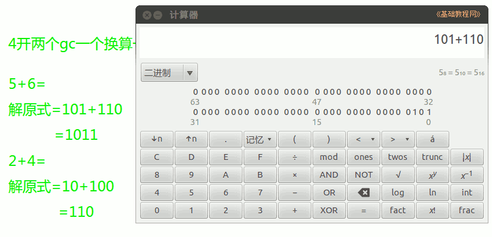

2014-2015 第一学期七年级文字处理和网页教学设计
作者：TeliuTe 来源：基础教程网
二十二、学会二进制运算 返回目录 下一课
（一）教学设计
1、学习目标：学会Ubuntu基本操作，校园网操作，中英文指法
2、注意事项：绕过弯来，既不要跳也不要落，一楼过了二楼
3、教学过程：
1）教师准备学案和板书；
2）学生整队进入，开机抄黑板上笔记；
3）教师讲解板书演示操作；
4）学生打指法、日志、完成操作；
5）教师打勾记录学生指法成绩，检查日志和操作；
注：学生抄完笔记就开始打指法、日志，老师讲完后再继续完成；
（二）板书设计(学生笔记)
第22课 学会二进制运算
2014-12-6 12:17
1、二进制包含0和1，最大为1
2、二进制逢二进一，进位
3、列式计算 先转换再求和
（1） (2） （3）
4、开一个gc，“总是置顶”
例：4+5=？
解原式=100+101
=1001
操作图示：

（三）课后记
--
(0)2+5=?
--------------
(1)2+3=?
(2)4+6=?
--------------
(3)2+4=?
(4)5+6=?
--------------
(5)4+3=?
(6)3+7=?
--------------
(7)5+3=?
(8)4+7=?
--------------
转换的那一步有些问题，上一节课应该强调一下
或者多做两道数字题，字母就做一个就行了
--
对着黑板上讲解，抄上9道题目，或者抄上10道题目
每个同学做自己顺序的题目，不过让做两题，出上两列题目20道
--
检查起来比较麻烦，不过也没什么，脑瓜能转的动就好
学生容易用口算，比如11+10=21，十进制习惯了
--
学生转弯还是有些问题，不知道从何下手，做着做着就迷糊
不知道做到哪儿了，也不知道该继续做什么了，步骤很重要
--
年底学生脑瓜有些转不动了，后面学一学word文档
返回目录 下一课
本教程由86团学校TeliuTe制作|著作权所有
基础教程网：http://teliute.org/
美丽的校园……
转载和引用本站内容，请保留作者和本站链接。